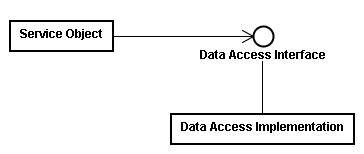
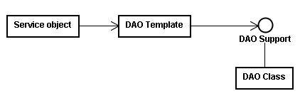

Spring 的 DAO 框架让您在进行资料库存取时，无须接触到与所使用特定资料库的技术相关细节， DAO 的全名为 Data Access Object，在您的应用程式中，需要使用到资料存取时，是透过一个资 料存取介面来操作，而实际上进行资料库存取的物件要实作该介面，并在规范的方法之 中，实 作存取时的相关细节。
举个 DAO 的例子，假设您的应用程式中有个 User 物件，在进行资料库存取时（例如 find、insert、 update、delete），您的应用程式不应依赖于一个实际的类别实作，而可以让它依赖一个介面， 例如一个 IUserDAO 介面：
package onlyfun.caterpillar;
public interface IUserDAO {
public void insert(User user);
public User find(Integer id);
public void update(User user);
public void delete(User user);
}
实际上进行资料库存取的类别可以实作 IUserDAO 介面，例如定义一个简单的 UserDAO 类别：
package onlyfun.caterpillar;
...
public class UserDAO implements IUserDAO {
private DataSource dataSource;
public void setDataSource(DataSource dataSource) {
this.dataSource = dataSource;
}
public void insert(User user) { String name = user.getName();
int age = user.getAge().intValue();
Connection conn = null; Statement stmt = null;
try {
conn = dataSource.getConnection();
stmt = conn.createStatement();
stmt.execute( "INSERT INTO user(name,age) VALUES("+ name + "," + age + ")");
} catch (SQLException e) {
e.printStackTrace();
}
finally {
if(stmt != null) {
try {
stmt.close();
}
catch(SQLException e) {
e.printStackTrace();
}
}
if(conn != null) {
try {
conn.close();
}
catch(SQLException e) {
e.printStackTrace();
}
}
}
}
public User
...
find(Integer id) {
return null;
}
public void update(User user) {
...
}
public void delete(User user) {
...
}
}
您的应用程式主流程在进行资料存取时，可以使用 IUserDAO 来宣告操作介面，例如：
... User user = new User(); user.setName( "caterpillar"); user.setAge(new Integer(30)); IUserDAO userDao = getUserDAO(); userDao.insert(user); ...
由于依赖于介面，所以您可以随时替换 IUserDAO 的实作类别，而 IUserDAO 介面宣告的操作方法 上，并没有任何与底层资料库存取的技术细节，Spring 的 DAO 框架正是基于这样的基本原理， 将应用程式与底层存取技术隔离开来。

资料存取介面上只曝光与特定资料库存取技术无关的相关方法（例如 update、insert、delete 等），设计上依赖于介面，程式也易于测试，也不让您的应用程式受限于只能使用某一资料库技 术。
而在之前的示范程式中，事实上对于实际的资料库存取流程来说，有几个步骤是固定的，例如取 得 DataSource、取得 Connection、处理例外 等，对于不同的资料库技术，这些步骤大致上是相 同的，只有少部份不同，Spring 运用 Template Method 模式，将固定的流程撰写于 Template 类别之中（例如 JdbcTemplate、HibernateTemplate 类别），而对于不同的一些细节步 骤，则 委托特定 DAO 支援物件来处理（例如需要事务处理时）：

在例外处理方面，Spring 也提供了与特定技术无关的例外处理体系（像是 SQLException、 HibernateException），让您的应用程式不会因处理特定例外，而耦合于某种资料库技术。
首先来了解例外处理，Java 的例外有 Checked exception 与 Unchecked exception，Checked excepiton 是编译时期在语法上所必须处理的例外，因为这些例外通常是可以预期发生的，编译 器要求您一定要处理，因而无从选择的您必须在语法上以 try...catch 加以处理；Unckecked exception 则 是 执 行 时 期 例 外 （ Runtime exception ） ， 在 例 外 的 继 承 架 构 上 是 java.lang.RuntimeException 类别的子类别，通常是由于逻辑上的错误而引发的例外， 例外真 的发生时，您可以选择使用 try...catch 来作处理，或是让例外直接丢出至应用程式最上层处理， 或是丢至 JVM 中处理。
Checked exception 的立意本来是好的，对于这类例外发生时，希望的是程式设计人员可以加以 处理至程式能回复正常运作，然而有时候，对于 Checked exception 往往是无力回复的，当这类 的例外在底层的资料库存取发生时（例如无法取得连线），最好的处理方式就是不处理，让例外 传播至上层应用程 式，由上层应用程式捕捉以显示相关讯息，让使用者得知问题出在哪边，而 不是在底层的资料库存取程式中作一些无能为力的处理（例如记录下无法连线的讯 息？），然 而面对 Checked exception，由于编译器要求一定要处理，程式设计人员只好莫可奈何的撰写一 些例外处理语法来处理掉这些例外。
使用 throws 在方法上宣告例外以让例外向上层传播也不是一个好的主意，另一方面，有些程式 或框架会自行继承相关的例外类别，包括一些相关的例外讯息， 它们也会在定义介面时于方法 上声明 throws 某些类型的例外，然而如果在这些方法中发生了某些不是方法上声明的例外（可 能由于使用的底层技术不同而有这 种情况，像是 JDBC 或是 Hibernate），就无法将之 throw， 只能自行撰写一些 try..catch 来暗自处理掉，如果想要让这些例外丢出至上 层，就要更多道的 手续了。
Spring 的 DAO 框架并 不丢出 与资 料库技 术相 关的例 外， Spring 所 有的例 外都 是 org.springframework.dao.DataAccessException 的子类别，一个与资料库技术无关的通用例外， 而且 DataAccessException 是 RuntimeException 的子类别，也就是说它是属于 Unchecked exception，您不用被强迫使用 try...catch 来处理例外，而可以自己选择要不要处理，在不处 理的情况下，也可以很简单的传播至上层的应用 程式。
对 于 JDBC 存 取 ， Spring 将 SQLException 等 转 化 为 自 己 的 DAO 例 外 物 件 ， org.springframework.dao 套件下提供一 致性的例外处理层次， DataAccessException 是这个 层次的基础类别，它继承自 org.springframework.core 套件的 NestedRuntimeException，而 NestedRuntimeException 继承自 RuntimeException，对于一些例 外，您可以选择处理它，或者 忽略它，由最上层的应用程式或是最后由 JVM 来处理。
如果您要处理特定的例外，Spring 也为您将例外作好了分类，例如资料库连结时会丢出的例外 类型、语法错误时的例外类型，您可以针对您所想处理的例外加 以捕捉，您可以看看 Spring 参考手册中的 DAO support 一章，当中有一些对例外处理的说明，也有个 DataAccessException 的类别继承图。